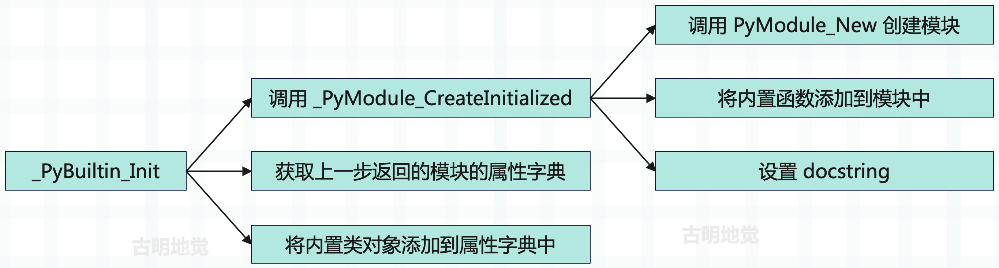

楔子
我们之前完成了 Python 的字节码、以及虚拟机的剖析工作，但这仅仅只是一部分，而其余的部分则被遮在了幕后。记得在分析虚拟机的时候，曾这么说过：
解释器启动时，首先会进行 "运行时环境" 的初始化，关于 "运行时环境" 的初始化是一个非常复杂的过程。并且 "运行时环境" 和 "执行环境" 是不同的，"运行时环境" 是一个全局的概念，而 "执行环境" 是一个栈帧。关于 "运行时环境" 后面会单独分析，这里就假设初始化动作已经完成，我们已经站在了虚拟机的门槛外面，只需要轻轻推动第一张骨牌，整个执行过程就会像多米诺骨牌一样，一环扣一环地展开。
所以这次，我们将回到时间的起点，从 Python 的应用程序被执行开始，一步一步紧紧跟随 Python 的轨迹，完整地展示解释器在启动之初的所有动作。当我们了解所有的初始化动作之后，也就能对 Python 引擎执行字节码指令时的整个运行环境了如指掌了。
线程模型
我们知道线程是操作系统调度的最小单元，那么 Python 的线程又是怎样的呢？
启动一个 Python 线程，底层会启动一个 C 线程，然后启动操作系统的一个原生线程（OS 线程）。所以 Python 线程实际上是对 OS 线程的一个封装，因此 Python 的线程是货真价实的。
然后 Python 还提供了一个 PyThreadState 对象，也就是线程状态对象，维护 OS 线程执行的状态信息，相当于是 OS 线程的一个抽象描述。虽然真正用来执行的线程及其状态肯定是由操作系统进行维护的，但 Python 虚拟机在运行的时候总需要另外一些与线程相关的状态和信息，比如是否发生了异常等等，这些信息显然操作系统是没有办法提供的。
而 PyThreadState 对象正是为 OS 线程准备的、在虚拟机层面保存其状态信息的对象，也就是线程状态对象。在 Python 中，当前活动的 OS 线程对应的 PyThreadState 对象可以通过调用 PyThreadState_GET 函数获得，有了线程状态对象之后，就可以设置一些额外信息了。具体内容，我们后面会说。
当然除了线程状态对象之外，还有进程状态对象，我们来看看两者在底层的定义是什么？它们位于 Include/pystate.h 中。
// ts 是 thread state 的简写
typedef struct _ts PyThreadState;
// is 是 interpreter state 的简写
typedef struct _is PyInterpreterState;
里面的 PyThreadState 表示线程状态对象，PyInterpreterState 表示进程状态对象，但它们都是 typedef 起的一个别名。前者是 struct _ts 的别名，后者是 struct _is 的别名，来看一下它们长什么样。
// Include/cpython/pystate.h
// Python 的异常信息有三个属性
// exc_type：异常类型；exc_value：异常值，说白了就是异常本身；exc_traceback：异常的回溯栈
// 而 _PyErr_StackItem 相当于对这三个属性做了封装，并且还通过 previous_item 形成了一个链表
typedef struct _err_stackitem {
PyObject *exc_type, *exc_value, *exc_traceback;
struct _err_stackitem *previous_item;
} _PyErr_StackItem;
struct _ts {
// 指向上一个线程状态对象
struct _ts *prev;
// 指向下一个线程状态对象
struct _ts *next;
// 进程状态对象，因为每个线程都隶属于一个进程
PyInterpreterState *interp;
// 当前正在执行的栈桢
struct _frame *frame;
// 递归深度
int recursion_depth;
// 标记栈是否溢出，如果溢出，还允许 50 次调用来处理运行时错误
char overflowed;
// 标记当前调用不能导致栈溢出的标志位
char recursion_critical;
// 栈检查计数器
int stackcheck_counter;
// 追踪和性能分析时的执行深度计数器
int tracing;
// 是否启用追踪
int use_tracing;
// C 级性能分析的函数指针
Py_tracefunc c_profilefunc;
// C 级追踪函数指针
Py_tracefunc c_tracefunc;
// Python 级性能分析对象
PyObject *c_profileobj;
// Python 级追踪对象
PyObject *c_traceobj;
// 当前抛出的异常信息
PyObject *curexc_type;
PyObject *curexc_value;
PyObject *curexc_traceback;
// 当前正在处理的异常状态（如果没有协程/生成器）
_PyErr_StackItem exc_state;
// 指向当前正在处理的异常栈的栈顶
// 估计有人好奇 exc_state 和 exc_info 啥区别，我们稍后说
_PyErr_StackItem *exc_info;
// 存储线程状态信息的字典
PyObject *dict;
// GIL 状态计数器
int gilstate_counter;
// 待抛出的异步异常
PyObject *async_exc;
// 创建该线程状态对象的线程 ID
unsigned long thread_id;
// 嵌套层级，用于延迟删除
int trash_delete_nesting;
// 延迟删除的对象，关于延迟删除，我们介绍列表的时候说过
PyObject *trash_delete_later;
// 线程状态正常删除时的回调函数
void (*on_delete)(void *);
// 回调函数的数据参数（实现为一个指向锁的弱引用）
void *on_delete_data;
// 协程起源追踪深度
int coroutine_origin_tracking_depth;
// 当异步生成器首次迭代时，用于存储相关状态和处理异常
PyObject *async_gen_firstiter;
// 当异步生成器被垃圾回收时，用于执行必要的清理工作
PyObject *async_gen_finalizer;
// 上下文对象
PyObject *context;
// 上下文版本号
uint64_t context_ver;
// 线程状态对象的唯一标识符
uint64_t id;
};
以上是线程状态对象，然后我们再来看看进程状态对象。需要补充的是，struct _is、或者说 PyInterpreterState 在严格意义上应该叫做解释器状态对象。我们知道当解释器启动后会创建一个进程，但这两者并不是一对一的，因为 CPython 支持多解释器模式。也就是说可以在一个进程中启动多个解释器，这种模式一般应用在嵌入式 Python 或需要隔离环境的情况。
但是多解释器模式只能通过手动调用 Python/C API 实现，Python 代码层面无法直接创建和管理多个解释器，所以默认一个进程只会对应一个解释器实例。因此为了和线程对应，我们这里称 PyInterpreterState 为进程状态对象。
// Include/internal/pycore_pystate.h
struct _is {
// Python 支持多进程，多个进程状态对象也会以链表的形式进行组织
// next 字段会指向下一个进程状态对象
struct _is *next;
// 每个进程内部可以有很多个线程，那么自然就会有很多个线程状态对象
// 这些线程状态对象会以链表的形式串起来，而 tstate_head 指向链表的头节点
struct _ts *tstate_head;
// 进程状态对象的 ID
int64_t id;
// 进程状态对象的引用计数
int64_t id_refcount;
// 指示解释器是否需要引用计数跟踪
// 当多个子解释器共享同一个 ID 时，此标志用于确保 ID 的正确管理和清理
int requires_idref;
// ID 相关的互斥锁
PyThread_type_lock id_mutex;
// 终止标志
int finalizing;
// sys.modules，所以可以看出，多个线程共用一个 sys.modules
PyObject *modules;
// 按模块索引存储的缓存，它允许通过数字索引快速访问模块
// 而不是每次都通过模块名在 modules 字典中查找，提高了模块访问性能
PyObject *modules_by_index;
// sys 模块的属性字典
PyObject *sysdict;
// 内置名称空间
PyObject *builtins;
// 导入机制
PyObject *importlib;
// 线程切换检查间隔
int check_interval;
// 进程内部的线程数量
long num_threads;
// 线程栈大小
size_t pythread_stacksize;
// 编解码器搜索路径
PyObject *codec_search_path;
// 编解码器缓存
PyObject *codec_search_cache;
// 存储自定义的编解码错误处理器
// 允许通过 codecs.register_error() 注册新的错误处理策略，用于处理编解码过程中遇到的错误
PyObject *codec_error_registry;
// 表示编解码系统是否已经完成初始化，为 1 时表示已初始化，0 表示未初始化
int codecs_initialized;
// 文件系统编码设置
struct {
char *encoding; /* Filesystem encoding (encoded to UTF-8) */
char *errors; /* Filesystem errors (encoded to UTF-8) */
_Py_error_handler error_handler;
} fs_codec;
// 解释器的配置参数结构体
// 包含：路径设置、命令行参数、环境变量设置、编码设置、性能和调试选项、内存分配器设置、隔离选项等
PyConfig config;
// 控制动态库加载行为的标志位，用于 dlopen() 函数调用
// 这个标志决定了动态库加载时的符号解析策略和可见性
#ifdef HAVE_DLOPEN
int dlopenflags;
#endif
// 存储进程状态信息的字典
PyObject *dict;
// 内置名字空间的备份副本，用于在必要时恢复到内置名字空间的默认状态
// 这是一个安全措施，防止内置名字空间被意外修改。
PyObject *builtins_copy;
// 存储当前解释器使用的导入函数，通常是 __import__ 函数
// 因此解释器也允许自定义模块导入行为，用于实现特殊的导入逻辑
PyObject *import_func;
// 帧评估函数，默认是 _PyEval_EvalFrameDefault
// 所以解释器也支持自定义帧评估函数，即自定义字节码执行逻辑
_PyFrameEvalFunction eval_frame;
Py_ssize_t co_extra_user_count;
freefunc co_extra_freefuncs[MAX_CO_EXTRA_USERS];
#ifdef HAVE_FORK
PyObject *before_forkers;
PyObject *after_forkers_parent;
PyObject *after_forkers_child;
#endif
/* AtExit module */
void (*pyexitfunc)(PyObject *);
PyObject *pyexitmodule;
uint64_t tstate_next_unique_id;
struct _warnings_runtime_state warnings;
PyObject *audit_hooks;
};
所以 PyInterpreterState 对象可以看成是对进程的模拟， PyThreadState 对象可以看成是对线程的模拟。我们之前分析虚拟机的时候说过执行环境，如果再将运行时环境加进去的话。

进程状态对象的 tstate_head 指向了线程状态对象，对应当前活跃的 Python 线程；而每个线程状态对象的 frame 都指向当前正在执行的栈帧对象。
线程环境的初始化
在解释器启动之后，初始化的动作是从 Py_NewInterpreter 函数开始的，然后这个函数调用了 new_interpreter 函数完成初始化。至于这两个函数长什么样一会儿再聊，先往后看。
我们知道当操作系统在运行一个可执行文件时，首先会创建一个进程内核。同理在 Python 中亦是如此，会在 new_interpreter 中调用 PyInterpreterState_New 创建一个崭新的 PyInterpreterState 对象，该函数位于 Python/pystate.c 中。
PyInterpreterState *
PyInterpreterState_New(void)
{
// 触发审计事件
if (PySys_Audit("cpython.PyInterpreterState_New", NULL) < 0) {
return NULL;
}
// 为进程状态对象分配内存
PyInterpreterState *interp = PyMem_RawMalloc(sizeof(PyInterpreterState));
if (interp == NULL) {
return NULL;
}
// 初始化内存
memset(interp, 0, sizeof(*interp));
interp->id_refcount = -1;
// 每个线程执行 100 条字节码后进行切换
interp->check_interval = 100;
// 初始化 Python 配置
PyConfig_InitPythonConfig(&interp->config);
// 设置帧评估函数，默认为 _PyEval_EvalFrameDefault
interp->eval_frame = _PyEval_EvalFrameDefault;
// 设置动态库加载标志
#ifdef HAVE_DLOPEN
#if HAVE_DECL_RTLD_NOW
interp->dlopenflags = RTLD_NOW;
#else
interp->dlopenflags = RTLD_LAZY;
#endif
#endif
// _PyRuntimeState 是 Python 解释器的全局运行时状态结构体，管理以下内容
// GIL 锁相关的状态、解释器链表、垃圾回收系统状态、核心模块和类型
// 信号处理、内存分配器、线程状态追踪、全局审计钩子等
// 注：每个进程只有一个全局运行时（_PyRuntime），它是最高级的运行时状态容器
_PyRuntimeState *runtime = &_PyRuntime;
// struct pyinterpreters 内部有四个字段
// PyThread_type_lock mutex：互斥锁
// PyInterpreterState *head：进程状态对象的头结点
// PyInterpreterState *main：主进程对应的进程状态对象
// int64_t next_id：下一个可用的解释器 ID，注意：主解释器 ID、或者说主进程状态对象的 ID 永远是 0
struct pyinterpreters *interpreters = &runtime->interpreters;
// 获取全局解释器锁，用于保护解释器链表的操作
// 它确保在多线程环境下，解释器的创建和管理是线程安全的
HEAD_LOCK(runtime);
// next_id 必须大于等于 0
if (interpreters->next_id < 0) {
PyErr_SetString(PyExc_RuntimeError,
"failed to get an interpreter ID");
PyMem_RawFree(interp);
interp = NULL;
}
else {
// 分配新 ID 并更新 next_id
interp->id = interpreters->next_id;
interpreters->next_id += 1;
// 让新创建的进程状态对象 interp，成为进程状态对象链表的头结点
// 所以它的 next 要等于 interpreters->head
interp->next = interpreters->head;
// 如果 interpreters->main 等于 NULL，说明当前的进程是第一个进程
// 那么显然它就是主进程，而之后创建的进程就是子进程了
if (interpreters->main == NULL) {
interpreters->main = interp;
}
// 然后再让 interpreters->head 等于 interp
interpreters->head = interp;
}
HEAD_UNLOCK(runtime);
if (interp == NULL) {
return NULL;
}
interp->tstate_next_unique_id = 0;
interp->audit_hooks = NULL;
return interp;
}
所以解释器在启动时，会创建一个 PyInterpreterState 对象。如果开启了多进程，那么内部会继续创建，然后通过 next 指针将多个 PyInterpreterState 串成一个链表结构。
在调用 PyInterpreterState_New 成功创建 PyInterpreterState 之后，会再接再厉，调用 PyThreadState_New 创建一个全新的线程状态对象，相关函数定义同样位于 Python/pystate.c 中。
PyThreadState *
PyThreadState_New(PyInterpreterState *interp)
{
return new_threadstate(interp, 1);
}
我们注意到这个函数接收一个 PyInterpreterState，这说明线程是依赖进程的，因为需要进程给自己分配资源，然后这个函数又调用了 new_threadstate。除了传递 PyInterpreterState 之外，还传了一个 1，想也不用想这肯定是创建的线程数量。这里创建 1 个，也就是主线程（main thread）。
static PyThreadState *
new_threadstate(PyInterpreterState *interp, int init)
{
_PyRuntimeState *runtime = &_PyRuntime;
// 为线程状态对象申请内存
PyThreadState *tstate = (PyThreadState *)PyMem_RawMalloc(sizeof(PyThreadState));
if (tstate == NULL) {
return NULL;
}
// 设置从线程中获取函数调用栈的操作
if (_PyThreadState_GetFrame == NULL) {
_PyThreadState_GetFrame = threadstate_getframe;
}
// 下面就是设置内部的字段属性
// 该线程所在的进程
tstate->interp = interp;
// 当前正在执行的栈桢，初始为 NULL
tstate->frame = NULL;
// 递归深度，初始为 0
tstate->recursion_depth = 0;
tstate->overflowed = 0;
tstate->recursion_critical = 0;
tstate->stackcheck_counter = 0;
tstate->tracing = 0;
tstate->use_tracing = 0;
tstate->gilstate_counter = 0;
tstate->async_exc = NULL;
tstate->thread_id = PyThread_get_thread_ident();
tstate->dict = NULL;
tstate->curexc_type = NULL;
tstate->curexc_value = NULL;
tstate->curexc_traceback = NULL;
tstate->exc_state.exc_type = NULL;
tstate->exc_state.exc_value = NULL;
tstate->exc_state.exc_traceback = NULL;
tstate->exc_state.previous_item = NULL;
tstate->exc_info = &tstate->exc_state;
tstate->c_profilefunc = NULL;
tstate->c_tracefunc = NULL;
tstate->c_profileobj = NULL;
tstate->c_traceobj = NULL;
tstate->trash_delete_nesting = 0;
tstate->trash_delete_later = NULL;
tstate->on_delete = NULL;
tstate->on_delete_data = NULL;
tstate->coroutine_origin_tracking_depth = 0;
tstate->async_gen_firstiter = NULL;
tstate->async_gen_finalizer = NULL;
tstate->context = NULL;
tstate->context_ver = 1;
if (init) {
_PyThreadState_Init(runtime, tstate);
}
HEAD_LOCK(runtime);
tstate->id = ++interp->tstate_next_unique_id;
tstate->prev = NULL;
// 当前线程状态对象的 next，我们看到指向了线程状态对象链表的头结点
tstate->next = interp->tstate_head;
// 因为每个线程状态对象的 prev 指针都要指向上一个线程状态对象
// 如果是头结点的话，那么 prev 就是 NULL
// 但由于新的线程状态对象在插入之后变成了链表的新的头结点
// 因此还需要将插入之前的头结点的 prev 指向新插入的线程状态对象
if (tstate->next)
tstate->next->prev = tstate;
// 将 tstate 设置为线程状态对象链表的新的头结点
interp->tstate_head = tstate;
HEAD_UNLOCK(runtime);
// 返回线程状态对象
return tstate;
}
和 PyInterpreterState_New 相同， PyThreadState_New 会申请内存，创建线程状态对象，并且对每个字段进行初始化。其中 prev 指针和 next 指针分别指向了上一个线程状态对象和下一个线程状态对象。而且也肯定会存在某一时刻，会有多个 PyThreadState 对象组成一个链表，那什么时刻会发生这种情况呢？显然用鼻子想也知道这是在启动多线程的时候。
Python 在插入线程状态对象的时候采用的是头插法。
从源码中我们看到，虚拟机设置了从线程中获取函数调用栈的操作，所谓函数调用栈就是前面说的 PyFrameObject 对象链表。而且在源码中，PyThreadState 关联了 PyInterpreterState，PyInterpreterState 也关联了 PyInterpreterState 。
到目前为止，仅有的两个对象建立起了联系。而对应到操作系统，就是进程和线程建立了联系。
而在两者建立了联系之后，那么就很容易在 PyInterpreterState 和 PyThreadState 之间穿梭。并且在 Python 运行时环境中，会有一个变量（先卖个关子）一直维护着当前活动的线程，更准确的说是当前活动线程（OS 线程）对应的 PyThreadState 对象。初始时，该变量为 NULL，在 Python 启动并创建了第一个 PyThreadState 之后，会调用 PyThreadState_Swap 函数来设置这个变量。
// Python/pystate.c
PyThreadState *
PyThreadState_Swap(PyThreadState *newts)
{
// 调用了 _PyThreadState_Swap，里面传入了两个参数
// 第一个我们后面说，从名字上看显然这是和 GIL 相关的
// 第二个参数就是新创建的线程状态对象
return _PyThreadState_Swap(&_PyRuntime.gilstate, newts);
}
PyThreadState *
_PyThreadState_Swap(struct _gilstate_runtime_state *gilstate, PyThreadState *newts)
{
// 获取当前的线程状态对象，并且保证线程的安全
PyThreadState *oldts = _PyRuntimeGILState_GetThreadState(gilstate);
// 将 GIL 交给 newts，也就是新创建、即将获取执行权的线程状态对象
_PyRuntimeGILState_SetThreadState(gilstate, newts);
// ...
return oldts;
}
所以逻辑很容易理解，有一个变量始终维护着当前活跃线程对应的线程状态对象，初始时它是个 NULL。而一旦解释器启动，并创建了第一个线程状态对象（显然对应主线程），那么就会将创建的线程状态对象交给这个变量保存。
如果调用 _PyThreadState_Swap 的时候，发现保存线程状态对象的变量不为 NULL，那么说明开启了多线程。变量保存的就是代码中的 oldts，也就是当前活动线程对应的线程状态对象，可由于它的时间片耗尽，解释器会剥夺它的执行权，然后交给 newts。那么 newts 就成为了新的当前活跃线程对应的线程状态对象，那么它也要交给变量进行保存。
而通过 _PyThreadState_Swap 可以看到，想要实现这一点，主要依赖两个宏。
// 通过 &(gilstate)->tstate_current 获取当前活动线程（的线程状态对象）
#define _PyRuntimeGILState_GetThreadState(gilstate) \
((PyThreadState*)_Py_atomic_load_relaxed(&(gilstate)->tstate_current))
// 将 newts 设置为新的活跃线程，可以理解为发生了线程切换
#define _PyRuntimeGILState_SetThreadState(gilstate, value) \
_Py_atomic_store_relaxed(&(gilstate)->tstate_current, \
(uintptr_t)(value))
然后这两个宏里面出现了 _Py_atomic_load_relaxed、_Py_atomic_store_relaxed 和 &(gilstate)->tstate_current ，这些又是什么呢？还有到底是哪个变量在维护着当前活动线程对应的线程状态对象呢？其实那两个宏已经告诉你了。
//Include/internal/pycore_pystate.h
struct _gilstate_runtime_state {
// GIL 检查是否启用
int check_enabled;
// 持有 GIL 的活动线程对应的线程状态对象
_Py_atomic_address tstate_current;
// 函数指针，用于获取栈桢
PyThreadFrameGetter getframe;
PyInterpreterState *autoInterpreterState;
Py_tss_t autoTSSkey;
};
//Include/internal/pycore_atomic.h
#define _Py_atomic_store_relaxed(ATOMIC_VAL, NEW_VAL) \
_Py_atomic_store_explicit((ATOMIC_VAL), (NEW_VAL), _Py_memory_order_relaxed)
#define _Py_atomic_load_relaxed(ATOMIC_VAL) \
_Py_atomic_load_explicit((ATOMIC_VAL), _Py_memory_order_relaxed)
#define _Py_atomic_store_explicit(ATOMIC_VAL, NEW_VAL, ORDER) \
atomic_store_explicit(&((ATOMIC_VAL)->_value), NEW_VAL, ORDER)
#define _Py_atomic_load_explicit(ATOMIC_VAL, ORDER) \
atomic_load_explicit(&((ATOMIC_VAL)->_value), ORDER)
不难发现：
- _Py_atomic_load_relaxed 调用了 _Py_atomic_load_explicit，_Py_atomic_load_explicit 又调用了 atomic_load_explicit。
- _Py_atomic_store_relaxed 调用了 _Py_atomic_store_explicit，_Py_atomic_store_explicit 调用了 atomic_store_explicit。
而 atomic_load_explicit 和 atomic_store_explicit 是系统头文件 stdatomic.h 中定义的 api，这是在系统的 api 中修改的，所以说是线程安全的。
介绍完中间部分的内容，那么我们可以从头开始分析 Python 运行时环境的初始化了，我们说它是从 Py_NewInterpreter 开始的。
// Python/pylifecycle.c
PyThreadState *
Py_NewInterpreter(void)
{
// 线程状态对象
PyThreadState *tstate = NULL;
// 传入线程状态对象，调用 new_interpreter
PyStatus status = new_interpreter(&tstate);
if (_PyStatus_EXCEPTION(status)) {
Py_ExitStatusException(status);
}
// 返回线程状态对象
return tstate;
}
然后我们的重点是 new_interpreter 函数，进程状态对象的创建就是在这个函数里面发生的。
// Include/cpython/initconfig.h
// 程序执行的状态
typedef struct {
enum {
_PyStatus_TYPE_OK=0, // 正常
_PyStatus_TYPE_ERROR=1, // 错误
_PyStatus_TYPE_EXIT=2 // 退出
} _type;
const char *func; // 发生错误的函数名
const char *err_msg; // 错误消息
int exitcode; // 退出码
} PyStatus;
// Python/pylifecycle.c
static PyStatus
new_interpreter(PyThreadState **tstate_p)
{
PyStatus status;
// 运行时初始化，如果出现异常直接返回
status = _PyRuntime_Initialize();
if (_PyStatus_EXCEPTION(status)) {
return status;
}
// 获取运行时
_PyRuntimeState *runtime = &_PyRuntime;
if (!runtime->initialized) {
return _PyStatus_ERR("Py_Initialize must be called first");
}
// GIL API 在多解释器环境下存在问题，无法正常工作，因此需要禁用 PyGILState_Check() 来避免问题
_PyGILState_check_enabled = 0;
// 创建进程状态对象
PyInterpreterState *interp = PyInterpreterState_New();
if (interp == NULL) {
*tstate_p = NULL;
return _PyStatus_OK();
}
// 根据进程状态对象创建线程状态对象，维护对应的 OS 线程的状态
PyThreadState *tstate = PyThreadState_New(interp);
if (tstate == NULL) {
PyInterpreterState_Delete(interp);
*tstate_p = NULL;
return _PyStatus_OK();
}
// 将 GIL 的控制权交给创建的线程
PyThreadState *save_tstate = PyThreadState_Swap(tstate);
// 从当前或主进程状态对象复制配置到新的进程状态对象
PyConfig *config;
if (save_tstate != NULL) {
config = &save_tstate->interp->config;
} else {
PyInterpreterState *main_interp = PyInterpreterState_Main();
config = &main_interp->config;
}
status = _PyConfig_Copy(&interp->config, config);
if (_PyStatus_EXCEPTION(status)) {
return status;
}
config = &interp->config;
// 异常系统初始化
status = _PyExc_Init();
if (_PyStatus_EXCEPTION(status)) {
return status;
}
status = _PyErr_Init();
if (_PyStatus_EXCEPTION(status)) {
return status;
}
// 创建模块字典
PyObject *modules = PyDict_New();
if (modules == NULL) {
return _PyStatus_ERR("can't make modules dictionary");
}
interp->modules = modules;
// 初始化 sys 模块
PyObject *sysmod = _PyImport_FindBuiltin("sys", modules);
if (sysmod != NULL) {
interp->sysdict = PyModule_GetDict(sysmod);
if (interp->sysdict == NULL) {
goto handle_error;
}
Py_INCREF(interp->sysdict);
PyDict_SetItemString(interp->sysdict, "modules", modules);
if (_PySys_InitMain(runtime, interp) < 0) {
return _PyStatus_ERR("can't finish initializing sys");
}
}
else if (PyErr_Occurred()) {
goto handle_error;
}
// 初始化 builtins 模块
PyObject *bimod = _PyImport_FindBuiltin("builtins", modules);
if (bimod != NULL) {
interp->builtins = PyModule_GetDict(bimod);
if (interp->builtins == NULL)
goto handle_error;
Py_INCREF(interp->builtins);
}
else if (PyErr_Occurred()) {
goto handle_error;
}
if (bimod != NULL && sysmod != NULL) {
// 添加内置异常
status = _PyBuiltins_AddExceptions(bimod);
if (_PyStatus_EXCEPTION(status)) {
return status;
}
status = _PySys_SetPreliminaryStderr(interp->sysdict);
if (_PyStatus_EXCEPTION(status)) {
return status;
}
status = _PyImportHooks_Init();
if (_PyStatus_EXCEPTION(status)) {
return status;
}
// 初始化导入系统
status = init_importlib(interp, sysmod);
if (_PyStatus_EXCEPTION(status)) {
return status;
}
status = init_importlib_external(interp);
if (_PyStatus_EXCEPTION(status)) {
return status;
}
// 初始化编码
status = _PyUnicode_InitEncodings(tstate);
if (_PyStatus_EXCEPTION(status)) {
return status;
}
// 设置标准流
status = init_sys_streams(interp);
if (_PyStatus_EXCEPTION(status)) {
return status;
}
// 添加 main 模块
status = add_main_module(interp);
if (_PyStatus_EXCEPTION(status)) {
return status;
}
// 初始化 site 导入
if (config->site_import) {
status = init_import_size();
if (_PyStatus_EXCEPTION(status)) {
return status;
}
}
}
if (PyErr_Occurred()) {
goto handle_error;
}
*tstate_p = tstate;
return _PyStatus_OK();
handle_error:
// 错误处理，如果失败则清理所有资源并恢复原状态
PyErr_PrintEx(0);
PyThreadState_Clear(tstate);
PyThreadState_Swap(save_tstate);
PyThreadState_Delete(tstate);
PyInterpreterState_Delete(interp);
*tstate_p = NULL;
return _PyStatus_OK();
}
Python 在初始化运行时环境时，肯定也要对类型系统进行初始化等等，整体是一个非常庞大的过程。
到这里，我们对 new_interpreter 的探索算是有了一个阶段性的成功，我们创建了代表进程和线程概念的 PyInterpreterState 和 PyThreadState 对象，并在它们之间建立了联系。下面 new_interpreter 将进入另一个环节，设置系统 module。
创建 builtins 模块
在 new_interpreter 中创建了 PyInterpreterState 和 PyThreadState 对象之后，就会开始设置系统的 builtins 了。
static PyStatus
new_interpreter(PyThreadState **tstate_p)
{
// ...
// 申请一个 PyDictObject 对象，用于 sys.modules
PyObject *modules = PyDict_New();
if (modules == NULL) {
return _PyStatus_ERR("can't make modules dictionary");
}
// 然后让 interp -> modules 维护 modules
// 由于 interp 表示的是进程状态对象，这说明什么?
// 显然是该进程内的多个线程共享同一个 sys.modules
interp->modules = modules;
// 加载 sys 模块，所有的 module 对象都在 sys.modules 中
PyObject *sysmod = _PyImport_FindBuiltin("sys", modules);
if (sysmod != NULL) {
interp->sysdict = PyModule_GetDict(sysmod);
if (interp->sysdict == NULL) {
goto handle_error;
}
Py_INCREF(interp->sysdict);
PyDict_SetItemString(interp->sysdict, "modules", modules);
if (_PySys_InitMain(runtime, interp) < 0) {
return _PyStatus_ERR("can't finish initializing sys");
}
}
else if (PyErr_Occurred()) {
goto handle_error;
}
// 加载内置模块 builtins
PyObject *bimod = _PyImport_FindBuiltin("builtins", modules);
if (bimod != NULL) {
// 设置内置名字空间
interp->builtins = PyModule_GetDict(bimod);
if (interp->builtins == NULL)
goto handle_error;
Py_INCREF(interp->builtins);
}
// ...
}
整体还是比较清晰和直观的，另外我们说内置名字空间是由进程来维护的，因为进程就是用来为线程提供资源的。但是也能看出，一个进程内的多个线程共享同一个内置名字空间。显然这是非常合理的，不可能每开启一个线程，就为其创建一个 builtins。我们来从 Python 的角度证明这一点：
import threading
import builtins
def foo1():
builtins.list, builtins.tuple = builtins.tuple, builtins.list
def foo2():
print(f"猜猜下面代码会输出什么：")
print("list:", list([1, 2, 3, 4, 5]))
print("tuple:", tuple([1, 2, 3, 4, 5]))
f1 = threading.Thread(target=foo1)
f1.start()
f1.join()
threading.Thread(target=foo2).start()
"""
猜猜下面代码会输出什么：
list: (1, 2, 3, 4, 5)
tuple: [1, 2, 3, 4, 5]
"""
所有的内置对象和内置函数都在内置名字空间里面，可以通过 import builtins 获取、也可以直接通过 __builtins__ 这个变量来获取，当然这种方式拿到的是模块，再获取模块的 __dict__ 就是内置名字空间了。
我们在 foo1 中把 list 和 tuple 互换了，而这个结果显然也影响了 foo2 函数，这也说明了 builtins 模块是属于进程级别的，它被多个线程共享。当然不止内置名字空间，所有的 module 对象都是被多个线程共享的，所以是 interp->modules = modules。
至于对 builtins 模块的初始化是在 _PyBuiltin_Init 函数中进行的。
// Python/bltinmodule.c
PyObject *
_PyBuiltin_Init(void)
{
PyObject *mod, *dict, *debug;
const PyConfig *config = &_PyInterpreterState_GET_UNSAFE()->config;
if (PyType_Ready(&PyFilter_Type) < 0 ||
PyType_Ready(&PyMap_Type) < 0 ||
PyType_Ready(&PyZip_Type) < 0)
return NULL;
// 获取 builtins 模块
mod = _PyModule_CreateInitialized(&builtinsmodule, PYTHON_API_VERSION);
if (mod == NULL)
return NULL;
// 拿到模块内部的属性字典
dict = PyModule_GetDict(mod);
// ...
// 将所有内置对象加入到 builtins 模块的属性字典中，下面这些东西应该不陌生吧
SETBUILTIN("None", Py_None);
SETBUILTIN("Ellipsis", Py_Ellipsis);
SETBUILTIN("NotImplemented", Py_NotImplemented);
SETBUILTIN("False", Py_False);
SETBUILTIN("True", Py_True);
SETBUILTIN("bool", &PyBool_Type);
SETBUILTIN("memoryview", &PyMemoryView_Type);
SETBUILTIN("bytearray", &PyByteArray_Type);
SETBUILTIN("bytes", &PyBytes_Type);
SETBUILTIN("classmethod", &PyClassMethod_Type);
SETBUILTIN("complex", &PyComplex_Type);
SETBUILTIN("dict", &PyDict_Type);
SETBUILTIN("enumerate", &PyEnum_Type);
SETBUILTIN("filter", &PyFilter_Type);
SETBUILTIN("float", &PyFloat_Type);
SETBUILTIN("frozenset", &PyFrozenSet_Type);
SETBUILTIN("property", &PyProperty_Type);
SETBUILTIN("int", &PyLong_Type);
SETBUILTIN("list", &PyList_Type);
SETBUILTIN("map", &PyMap_Type);
SETBUILTIN("object", &PyBaseObject_Type);
SETBUILTIN("range", &PyRange_Type);
SETBUILTIN("reversed", &PyReversed_Type);
SETBUILTIN("set", &PySet_Type);
SETBUILTIN("slice", &PySlice_Type);
SETBUILTIN("staticmethod", &PyStaticMethod_Type);
SETBUILTIN("str", &PyUnicode_Type);
SETBUILTIN("super", &PySuper_Type);
SETBUILTIN("tuple", &PyTuple_Type);
SETBUILTIN("type", &PyType_Type);
SETBUILTIN("zip", &PyZip_Type);
debug = PyBool_FromLong(config->optimization_level == 0);
if (PyDict_SetItemString(dict, "__debug__", debug) < 0) {
Py_DECREF(debug);
return NULL;
}
Py_DECREF(debug);
return mod;
#undef ADD_TO_ALL
#undef SETBUILTIN
}
整个 _PyBuiltin__Init 函数的功能就是设置内置名字空间，不过设置的东西似乎少了很多，比如 dir、hasattr、setattr 等等，这些明显也是内置的，但是它们到哪里去了呢。其实，设置内置名字空间这个过程是分为两步的：
- 通过 _PyModule_CreateInitialized 函数创建 PyModuleObject 对象，即 builtins 模块。
- 获取 builtins 模块的属性字典（即内置名字空间），将 Python 的内置对象塞到里面。
我们上面只看到了第二步，其实在第一步创建 builtins 模块时就已经完成了大部分的属性设置工作。
// Include/moduleobject.h
// 包含了模块的核心信息
typedef struct PyModuleDef{
PyModuleDef_Base m_base;
// 模块名称
const char* m_name;
// 模块的文档字符串
const char* m_doc;
// 模块的额外内存大小，用于单进程多解释器
// 如果不是多解释器模式，那么写 -1 即可
Py_ssize_t m_size;
// 模块内部定义的函数
PyMethodDef *m_methods;
// 用于定义模块导入时的特殊行为，比如多阶段初始化等高级特性
struct PyModuleDef_Slot* m_slots;
// 用于垃圾回收，负责遍历模块引用的对象
traverseproc m_traverse;
// 用于垃圾回收，负责清理模块状态
inquiry m_clear;
// 模块被销毁时调用的清理函数
freefunc m_free;
} PyModuleDef;
// Object/moduleobject.c
PyObject *
_PyModule_CreateInitialized(struct PyModuleDef* module, int module_api_version)
{
const char* name;
PyModuleObject *m;
// 初始化
if (!PyModuleDef_Init(module))
return NULL;
// 拿到 module 的 name，对于当前来说就是 builtins
name = module->m_name;
// 这里比较有意思，这是检测模块版本的，针对的是需要被导入的 py 文件
// 解释器在导入 py 文件时，会优先从当前目录的 __pycache__ 里面加载 pyc
// 而 pyc 文件包含了编译时解释器的 MAGIC NUMBER，所以要比较是否一致
// 如果不一致，说明解释器版本不对，则不导入 pyc 文件，而是会重新编译 py 文件
if (!check_api_version(name, module_api_version)) {
return NULL;
}
if (module->m_slots) {
PyErr_Format(
PyExc_SystemError,
"module %s: PyModule_Create is incompatible with m_slots", name);
return NULL;
}
// ...
// 创建一个 PyModuleObject 实例
if ((m = (PyModuleObject*)PyModule_New(name)) == NULL)
return NULL;
// 如果 m_size > 0，说明当前是多解释器模式，这个不需要关注
// 因为多解释器模式只能手动调用 Python/C API 开启（用得也很少）
// 像我们平时在使用 Python 时，都是一个进程对应一个解释器
if (module->m_size > 0) {
m->md_state = PyMem_MALLOC(module->m_size);
if (!m->md_state) {
PyErr_NoMemory();
Py_DECREF(m);
return NULL;
}
memset(m->md_state, 0, module->m_size);
}
// 这里的变量 module 指向 PyModuleDef，它包含了模块的核心信息
// 而变量 m 指向的 PyModuleObject 才是模块对象，它是基于 PyModuleDef 构建的
if (module->m_methods != NULL) {
// module->m_methods 指向 builtin_methods 数组，该数组中包含了大量的内置函数
// 调用 PyModule_AddFunctions 将它们添加到模块中
if (PyModule_AddFunctions((PyObject *) m, module->m_methods) != 0) {
Py_DECREF(m);
return NULL;
}
}
if (module->m_doc != NULL) {
// 设置 docstring
if (PyModule_SetDocString((PyObject *) m, module->m_doc) != 0) {
Py_DECREF(m);
return NULL;
}
}
m->md_def = module;
return (PyObject*)m;
}
所以在创建模块之后，就已经将大量的内置函数添加到 builtins 模块里面了。然后来看一下模块的具体创建过程。
创建 module 对象
Python 的 module 对象在底层对应 PyModuleObject 结构体，来看看它长什么样子。
// Objects/moduleobject.c
typedef struct {
// 头部信息
PyObject_HEAD
// 属性字典，所有的属性和值都在里面
PyObject *md_dict;
// module 对象的核心信息
struct PyModuleDef *md_def;
void *md_state;
PyObject *md_weaklist;
PyObject *md_name;
} PyModuleObject;
而这个对象是通过 PyModule_New 创建的。
// Objects/moduleobject.c
PyObject *
PyModule_New(const char *name)
{
PyObject *nameobj, *module;
// 模块的名称
nameobj = PyUnicode_FromString(name);
if (nameobj == NULL)
return NULL;
// 创建 PyModuleObject
module = PyModule_NewObject(nameobj);
Py_DECREF(nameobj);
return module;
}
PyObject *
PyModule_NewObject(PyObject *name)
{
PyModuleObject *m;
// 为模块对象申请内存空间
m = PyObject_GC_New(PyModuleObject, &PyModule_Type);
if (m == NULL)
return NULL;
// 初始化内部字段
m->md_def = NULL;
m->md_state = NULL;
m->md_weaklist = NULL;
m->md_name = NULL;
// 属性字典
m->md_dict = PyDict_New();
// 调用 module_init_dict 初始化属性字典
if (module_init_dict(m, m->md_dict, name, NULL) != 0)
goto fail;
PyObject_GC_Track(m);
return (PyObject *)m;
fail:
Py_DECREF(m);
return NULL;
}
static int
module_init_dict(PyModuleObject *mod, PyObject *md_dict,
PyObject *name, PyObject *doc)
{
_Py_IDENTIFIER(__name__);
_Py_IDENTIFIER(__doc__);
_Py_IDENTIFIER(__package__);
_Py_IDENTIFIER(__loader__);
_Py_IDENTIFIER(__spec__);
if (md_dict == NULL)
return -1;
if (doc == NULL)
doc = Py_None;
// 模块的一些属性，如 __name__、__doc__等等
if (_PyDict_SetItemId(md_dict, &PyId___name__, name) != 0)
return -1;
if (_PyDict_SetItemId(md_dict, &PyId___doc__, doc) != 0)
return -1;
if (_PyDict_SetItemId(md_dict, &PyId___package__, Py_None) != 0)
return -1;
if (_PyDict_SetItemId(md_dict, &PyId___loader__, Py_None) != 0)
return -1;
if (_PyDict_SetItemId(md_dict, &PyId___spec__, Py_None) != 0)
return -1;
if (PyUnicode_CheckExact(name)) {
Py_INCREF(name);
Py_XSETREF(mod->md_name, name);
}
return 0;
}
这里虽然创建了一个 module 对象，但这仅仅是一个空的 module 对象，并没有包含相应的操作和数据。我们看到只设置了 name 和 doc 等属性。
设置 module 对象的属性
在 _PyModule_CreateInitialized 函数中调用 PyModule_New 创建了一个模块，然后通过 PyModule_AddFunctions 完成了对 builtins 大部分属性的设置。这个设置的属性依赖于第二个参数 module->m_methods，在这里为 builtin_methods。
// Python/bltinmodule.c
static PyMethodDef builtin_methods[] = {
{"__build_class__", (PyCFunction)(void(*)(void))builtin___build_class__,
METH_FASTCALL | METH_KEYWORDS, build_class_doc},
{"__import__", (PyCFunction)(void(*)(void))builtin___import__, METH_VARARGS | METH_KEYWORDS, import_doc},
BUILTIN_ABS_METHODDEF
BUILTIN_ALL_METHODDEF
BUILTIN_ANY_METHODDEF
BUILTIN_ASCII_METHODDEF
BUILTIN_BIN_METHODDEF
{"breakpoint", (PyCFunction)(void(*)(void))builtin_breakpoint, METH_FASTCALL | METH_KEYWORDS, breakpoint_doc},
BUILTIN_CALLABLE_METHODDEF
BUILTIN_CHR_METHODDEF
BUILTIN_COMPILE_METHODDEF
BUILTIN_DELATTR_METHODDEF
{"dir", builtin_dir, METH_VARARGS, dir_doc},
BUILTIN_DIVMOD_METHODDEF
BUILTIN_EVAL_METHODDEF
BUILTIN_EXEC_METHODDEF
BUILTIN_FORMAT_METHODDEF
{"getattr", (PyCFunction)(void(*)(void))builtin_getattr, METH_FASTCALL, getattr_doc},
BUILTIN_GLOBALS_METHODDEF
BUILTIN_HASATTR_METHODDEF
BUILTIN_HASH_METHODDEF
BUILTIN_HEX_METHODDEF
BUILTIN_ID_METHODDEF
BUILTIN_INPUT_METHODDEF
BUILTIN_ISINSTANCE_METHODDEF
BUILTIN_ISSUBCLASS_METHODDEF
{"iter", (PyCFunction)(void(*)(void))builtin_iter, METH_FASTCALL, iter_doc},
BUILTIN_LEN_METHODDEF
BUILTIN_LOCALS_METHODDEF
{"max", (PyCFunction)(void(*)(void))builtin_max, METH_VARARGS | METH_KEYWORDS, max_doc},
{"min", (PyCFunction)(void(*)(void))builtin_min, METH_VARARGS | METH_KEYWORDS, min_doc},
{"next", (PyCFunction)(void(*)(void))builtin_next, METH_FASTCALL, next_doc},
BUILTIN_OCT_METHODDEF
BUILTIN_ORD_METHODDEF
BUILTIN_POW_METHODDEF
{"print", (PyCFunction)(void(*)(void))builtin_print, METH_FASTCALL | METH_KEYWORDS, print_doc},
BUILTIN_REPR_METHODDEF
BUILTIN_ROUND_METHODDEF
BUILTIN_SETATTR_METHODDEF
BUILTIN_SORTED_METHODDEF
BUILTIN_SUM_METHODDEF
{"vars", builtin_vars, METH_VARARGS, vars_doc},
{NULL, NULL},
};
怎么样，是不是看到了玄机。
总结一下就是：在 Py_NewInterpreter 里面调用 new_interpreter 函数，然后在 new_interpreter 函数里面，通过 PyInterpreterState_New 创建 PyInterpreterState 对象，然后以 PyInterpreterState 对象为参数，调用 PyThreadState_New 函数创建 PyThreadState 对象。
接着就是执行各种初始化动作，然后调用 _PyBuiltin_Init 设置内置属性。然而在 _PyBuiltin_Init 函数的最后设置的都是一些内置的类对象，而内置函数（比如 getattr、exec 等）却没有设置。
所以 _PyBuiltin_Init 函数中间调用的 _PyModule_CreateInitialized 不仅仅是初始化一个 module 对象，还会在初始化之后将我们没有看到的一些属性设置进去。在里面先使用 PyModule_New 创建一个 PyModuleObject，此时它内部只有 __name__ 和 __doc__ 等属性，之后再通过 PyModule_AddFunctions 设置 builtin_methods，在 builtin_methods 里面我们看到了 dir、getattr 等内置函数。当这些属性设置完之后，退回到 _PyBuiltin_Init 函数中，再设置剩余的部分属性（内置的类对象和一些常量）。之后，builtins 模块就完成了。

另外 builtin_methods 是一个 PyMethodDef 类型的数组，里面是一个个的 PyMethodDef 结构体实例。
// Include/methodobject.h
typedef PyObject *(*PyCFunction)(PyObject *, PyObject *);
typedef PyObject *(*_PyCFunctionFast) (PyObject *, PyObject *const *, Py_ssize_t);
typedef PyObject *(*PyCFunctionWithKeywords)(PyObject *, PyObject *, PyObject *);
struct PyMethodDef {
// 内置函数的名称
const char *ml_name;
// 具体实现对应的 C 函数
PyCFunction ml_meth;
// 函数类型
/* #define METH_VARARGS 0x0001 支持扩展位置参数
* #define METH_KEYWORDS 0x0002 支持扩展关键字参数
* #define METH_NOARGS 0x0004 不需要参数
* #define METH_O 0x0008 精确接收一个位置参数
* #define METH_CLASS 0x0010 被 classmethod 装饰的类方法
* #define METH_STATIC 0x0020 被 staticmethod 装饰的静态方法
*/
int ml_flags;
// 函数的 __doc__
const char *ml_doc;
};
typedef struct PyMethodDef PyMethodDef;
对于这里面每一个 PyMethodDef 实例，_PyModule_CreateInitialized 都会基于它创建一个 PyCFunctionObject 对象，我们说过内置函数以及内置实例对象的方法在底层会对应 PyCFunctionObject。
// Include/methodobject.h
typedef struct {
// 头部信息
PyObject_HEAD
// PyMethodDef 实例
PyMethodDef *m_ml;
// self
PyObject *m_self;
// __module__
PyObject *m_module;
// 弱引用列表，不讨论
PyObject *m_weakreflist;
// 为了效率而单独实现的矢量调用函数
vectorcallfunc vectorcall;
} PyCFunctionObject;
然后 PyCFunctionObject 的创建则是通过 PyCFunction_New 完成的。
// Objects/methodobject.c
PyObject *
PyCFunction_New(PyMethodDef *ml, PyObject *self)
{
return PyCFunction_NewEx(ml, self, NULL);
}
PyObject *
PyCFunction_NewEx(PyMethodDef *ml, PyObject *self, PyObject *module)
{
vectorcallfunc vectorcall;
// 判断参数类型，决定调用方式
switch (ml->ml_flags & (METH_VARARGS | METH_FASTCALL | METH_NOARGS | METH_O | METH_KEYWORDS))
{
case METH_VARARGS:
case METH_VARARGS | METH_KEYWORDS:
/* For METH_VARARGS functions, it's more efficient to use tp_call
* instead of vectorcall. */
vectorcall = NULL;
break;
case METH_FASTCALL:
vectorcall = cfunction_vectorcall_FASTCALL;
break;
case METH_FASTCALL | METH_KEYWORDS:
vectorcall = cfunction_vectorcall_FASTCALL_KEYWORDS;
break;
case METH_NOARGS:
vectorcall = cfunction_vectorcall_NOARGS;
break;
case METH_O:
vectorcall = cfunction_vectorcall_O;
break;
default:
PyErr_Format(PyExc_SystemError,
"%s() method: bad call flags", ml->ml_name);
return NULL;
}
PyCFunctionObject *op;
// 我们看到 PyCFunctionObject 也采用了缓存池
op = free_list;
if (op != NULL) {
free_list = (PyCFunctionObject *)(op->m_self);
(void)PyObject_INIT(op, &PyCFunction_Type);
numfree--;
}
else {
op = PyObject_GC_New(PyCFunctionObject, &PyCFunction_Type);
if (op == NULL)
return NULL;
}
// 设置属性
op->m_weakreflist = NULL;
op->m_ml = ml;
Py_XINCREF(self);
op->m_self = self;
Py_XINCREF(module);
op->m_module = module;
op->vectorcall = vectorcall;
_PyObject_GC_TRACK(op);
return (PyObject *)op;
}
以上就是 _PyBuiltin__Init 所做的事情，再之后虚拟机会把 PyModuleObject 对象的属性字典抽取出来，赋值给 interp -> builtins。
// Python/pylifecycle.c
static PyStatus
new_interpreter(PyThreadState **tstate_p)
{
// ...
PyObject *bimod = _PyImport_FindBuiltin("builtins", modules);
if (bimod != NULL) {
// 通过 PyModule_GetDict 获取属性字典，赋值给 builtins
interp->builtins = PyModule_GetDict(bimod);
if (interp->builtins == NULL)
goto handle_error;
Py_INCREF(interp->builtins);
}
else if (PyErr_Occurred()) {
goto handle_error;
}
// ...
}
以后 Python 在访问内置名字空间时，直接访问 interp->builtins 就可以了，因为内置属性的使用会很频繁，所以这种加速机制是很有效的。
创建 sys 模块
Python 在创建 builtins 模块、设置内置名字空间之前，会先创建 sys 模块，流程是一样的，只是我们将介绍的顺序颠倒了一下。
static PyStatus
new_interpreter(PyThreadState **tstate_p)
{
// ...
// 创建 sys 模块
PyObject *sysmod = _PyImport_FindBuiltin("sys", modules);
if (sysmod != NULL) {
// 获取 sys 模块的属性字典，并赋值给 interp->sysdict
interp->sysdict = PyModule_GetDict(sysmod);
if (interp->sysdict == NULL) {
goto handle_error;
}
Py_INCREF(interp->sysdict);
// 将 "modules": modules 添加到 sys 模块的属性字典中
// 在 Python 里面便可通过 sys.modules 拿到所有的模块
PyDict_SetItemString(interp->sysdict, "modules", modules);
if (_PySys_InitMain(runtime, interp) < 0) {
return _PyStatus_ERR("can't finish initializing sys");
}
}
else if (PyErr_Occurred()) {
goto handle_error;
}
// ...
}
创建 sys module 之后，还会额外添加一个 __main__ 模块。
static PyStatus
new_interpreter(PyThreadState **tstate_p)
{
// ...
status = add_main_module(interp);
if (_PyStatus_EXCEPTION(status)) {
return status;
}
// ...
}
static PyStatus
add_main_module(PyInterpreterState *interp)
{
PyObject *m, *d, *loader, *ann_dict;
// 将 __main__ 添加进 sys.modules 中
m = PyImport_AddModule("__main__");
if (m == NULL)
return _PyStatus_ERR("can't create __main__ module");
d = PyModule_GetDict(m);
ann_dict = PyDict_New();
if ((ann_dict == NULL) ||
(PyDict_SetItemString(d, "__annotations__", ann_dict) < 0)) {
return _PyStatus_ERR("Failed to initialize __main__.__annotations__");
}
Py_DECREF(ann_dict);
if (PyDict_GetItemString(d, "__builtins__") == NULL) {
PyObject *bimod = PyImport_ImportModule("builtins");
if (bimod == NULL) {
return _PyStatus_ERR("Failed to retrieve builtins module");
}
if (PyDict_SetItemString(d, "__builtins__", bimod) < 0) {
return _PyStatus_ERR("Failed to initialize __main__.__builtins__");
}
Py_DECREF(bimod);
}
loader = PyDict_GetItemString(d, "__loader__");
if (loader == NULL || loader == Py_None) {
PyObject *loader = PyObject_GetAttrString(interp->importlib,
"BuiltinImporter");
if (loader == NULL) {
return _PyStatus_ERR("Failed to retrieve BuiltinImporter");
}
if (PyDict_SetItemString(d, "__loader__", loader) < 0) {
return _PyStatus_ERR("Failed to initialize __main__.__loader__");
}
Py_DECREF(loader);
}
return _PyStatus_OK();
}
这个 __main__ 估计不用我多说了。之前在 PyModule_New 中，创建一个 PyModuleObject 对象之后，会在其属性字典中插入一个名为 "__name__" 的 key，value 就是 "__main__"。但是对于当前模块来说，这个模块也叫做 __main__。
name = "古明地觉"
import __main__
print(__main__.name) # 古明地觉
import sys
print(sys.modules["__main__"] is __main__) # True
因此我们算是知道了，为什么执行 python xxx.py 的时候，__name__ 是 "__main__" 了，因为这里设置了。而 Python 沿着名字空间寻找的时候，最终会在 __main__ 的 local 空间中发现 __name__，且值为字符串 "__main__"。但如果是以 import 的方式加载的，那么 __name__ 则不是 "__main__"，而是模块名。
其实这个 __main__ 我们再熟悉不过了，当输入 dir() 的时候，就会显示 __main__ 的内容。dir 可以不加参数，如果不加参数，那么默认访问当前的 local 空间，也就是 __main__。
>>> __name__
'__main__'
>>>
>>> __builtins__.__name__
'builtins'
>>>
>>> import numpy as np
>>> np.__name__
'numpy'
所以说，访问模块就类似访问变量一样，modules 里面存放了所有的 <模块名, 模块对象>。当我们访问 np 的时候，会找到 name 为 "numpy" 的模块，然后这个值里面也维护了一个字典，其中也有一个 key 为 "__name__" 的 entry，value 为 "numpy"。
设置 site-specific 的 module 搜索路径
Python 是一个非常开放的体系，它的强大来源于丰富的第三方库，这些库由外部的 py 文件来提供。当使用这些第三方库的时候，只需要简单地进行 import 即可。一般来说，这些第三方库都放在 Lib/site-packages 中，如果程序想使用这些库，直接导入即可。
但是到目前为止，我们好像也没看到 Python 将 site-packages 路径设置到搜索路径里面去啊。其实在完成了 __main__ 的创建之后，Python 才腾出手来收拾这个 site-package。这个关键的动作在于 Python 的一个标准库：site.py。
我们先将 Lib 目录下的 site.py 删掉，然后导入一个第三方模块，看看会有什么后果。

因此 Python 在初始化的过程中确实导入了 site.py，所以才有了如下的输出。而这个 site.py 也正是 Python 能正确加载位于 site-packages 目录下第三方包的关键所在。我们可以猜测，应该就是这个 site.py 将 site-packages 目录加入到了 sys.path 中，而这个动作是由 init_import_size 完成的。
static PyStatus
new_interpreter(PyThreadState **tstate_p)
{
// ...
if (config->site_import) {
status = init_import_size();
if (_PyStatus_EXCEPTION(status)) {
return status;
}
}
// ...
}
static PyStatus
init_import_size(void)
{
PyObject *m;
// 导入 site 模块，在 site 模块里面会将 site-packages 加入到 sys.path 中
m = PyImport_ImportModule("site");
// 如果导入失败，抛出异常
if (m == NULL) {
// 这里的报错信息是不是和上图中显示的一样呢？
return _PyStatus_ERR("Failed to import the site module");
}
Py_DECREF(m);
return _PyStatus_OK();
}
在 init_import_size 中，只调用了 PyImport_ImportModule 函数，这个函数是 import 机制的核心所在。比如 PyImport_ImportModule("numpy") 就等价于 import numpy。
小结
以上就是运行时环境的初始化所做的事情，但需要注意：此时虚拟机还没有完全启动。对，上面的那些工作都只是前戏，是虚拟机启动之前所做的一些准备工作。而在准备工作做完之后，虚拟机就会正式启动。那么怎么启动呢？我们下一篇文章再聊。
欢迎大家关注我的公众号：古明地觉的编程教室。

如果觉得文章对你有所帮助，也可以请作者吃个馒头，Thanks♪(･ω･)ﾉ。